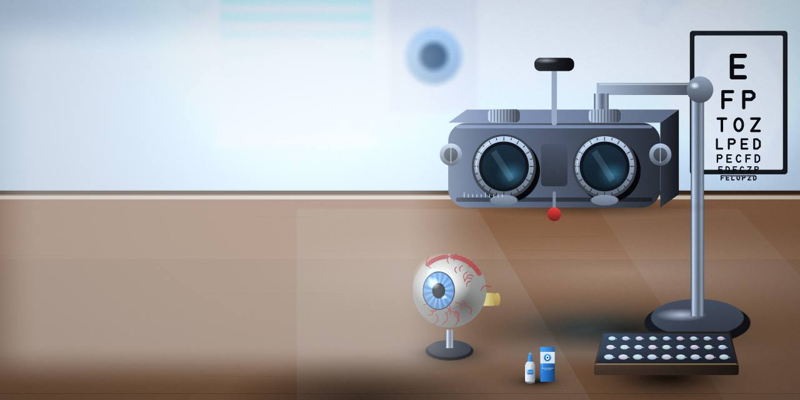
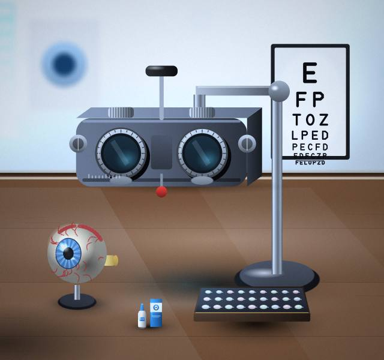
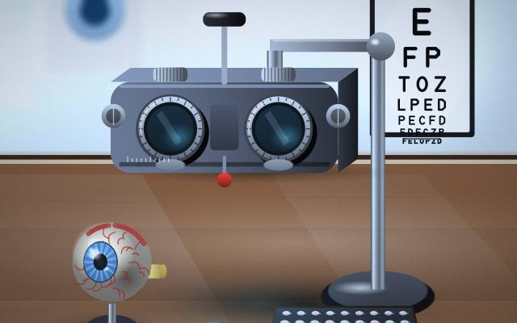
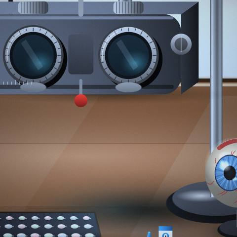
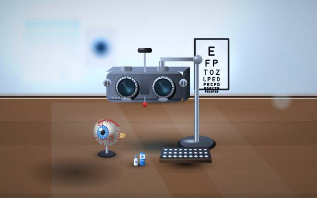
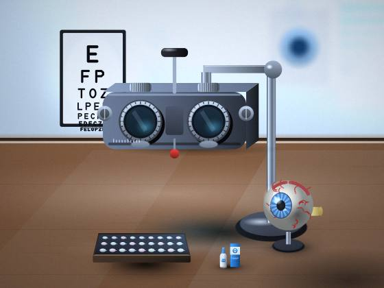

Consultations
Not sure if Consultations is right for you? A consultation will tell you.

Eye Clinic · Indore
Bring your questions, and your records if you have them.

Take the time you need to make up your mind.
You'll find us in Indore. Tell us what you have in mind.
Not sure if Consultations is right for you? A consultation will tell you.
Fitting and advice on lenses that sit on the eye. Message us about Lenses; we reply to every enquiry.
We'll explain Assessments in plain words.
Screenings: ask for details before you decide.
Glasses begins with a conversation about what you need.




Send a message or call and tell us what you need.
We examine, explain your options and answer questions.
We begin when you are ready, and check in afterwards.
A short list to bring with you.
Setting expectations on both sides.
A short list that saves a second message.
Bring any earlier reports or scans, and a list of questions.
Yes; we explain each step before it begins and answer your questions.
Contact us and we'll explain what to expect from a first visit.
Find us in Indore. Send us a message and we will send directions.
A conversation is the best first step.
Book an appointment